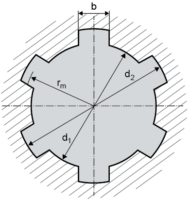

|
|
|


标准齿廓
您可以从列表框中选择以下标准之一：
- DIN ISO 14: 1986（轻系列）
- DIN ISO 14: 1986（中系列）
- DIN 5464: 2010（重型，用于车辆）
- DIN 5471: 1974（用于机床）
- DIN 5472: 1980（用于机床）
- 自定义输入
在花键轴连接中，选择标准后，程序会显示相应的外径和内径、花键数量及其宽度。
注意：
选择 选项以定义您自己的花键轴齿廓。几何参数基于下图。

English Original
Standard profiles
You can select one of these standards from the selection list:
- DIN ISO 14: 1986 (light series)
- DIN ISO 14: 1986 (medium series)
- DIN 5464: 2010 (heavy, for vehicles)
- DIN 5471: 1974 (for machine tools)
- DIN 5472: 1980 (for machine tools)
- Own input
In a splined shaft connection, after you select a standard, the program displays the corresponding external and internal diameters, and the number of splines, along with their width.
Note:
select the option to define your own splined shaft profile. The geometric parameters are based on the following figure.